Gorges de l'Aude, moins longues que celles de la Pierre-Lys, mais tout aussi spectaculaires (plus étroites, plus resserrées, plus sombres). Elles sont juste après Axat en remontant l'Aude depuis Saint-Martin-Lys
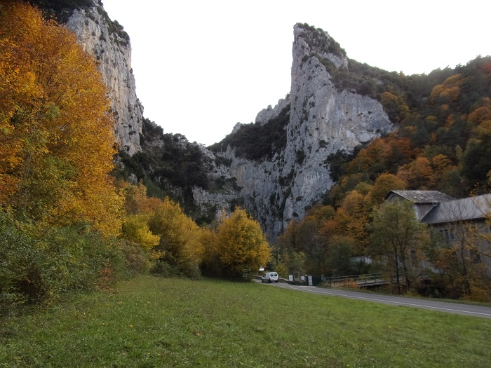
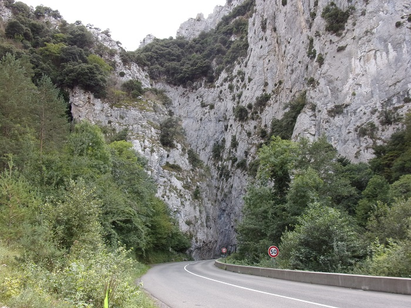
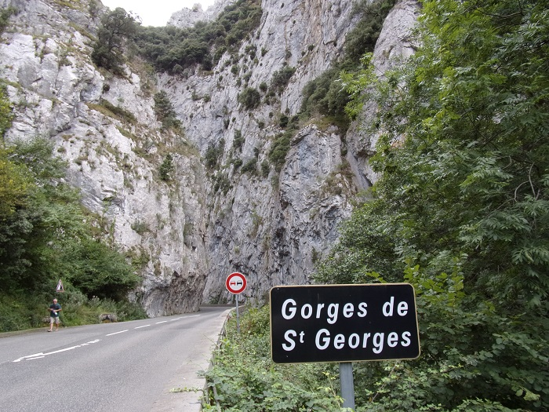
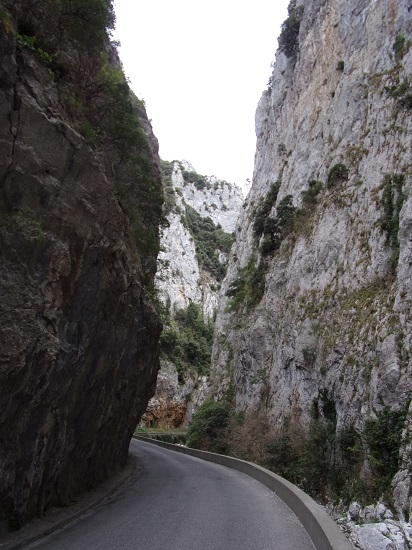
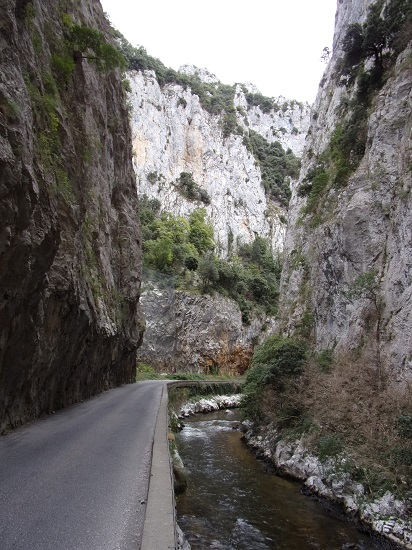
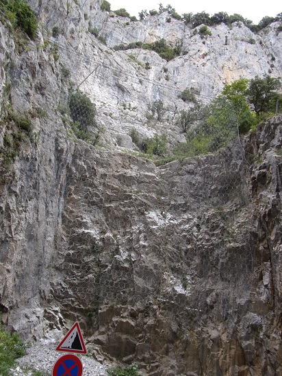
Au milieu des gorges, soit à 150 mètres de part et d'autre, se trouve un espace plus dégagé, volontairement creusé, protégé aujourd'hui par un filet métallique sur toute la hauteur. Etait-ce à cet endroit des gorges où les caches à mines, sensées faire s'écrouler les gorges en cas d'invasion espagnoles, étaient positionnées ?
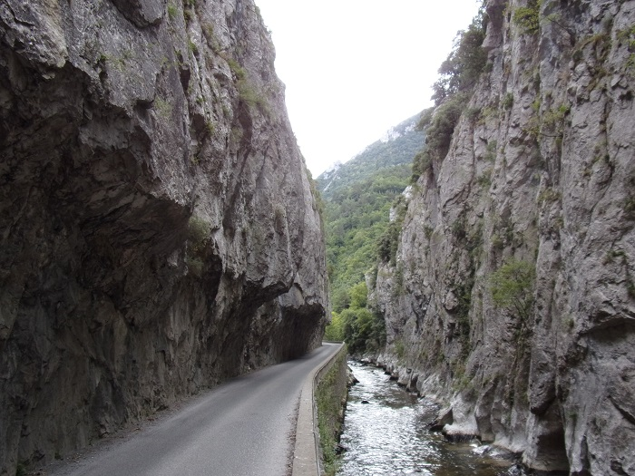
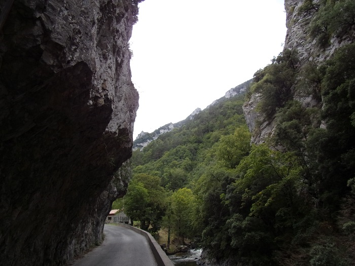
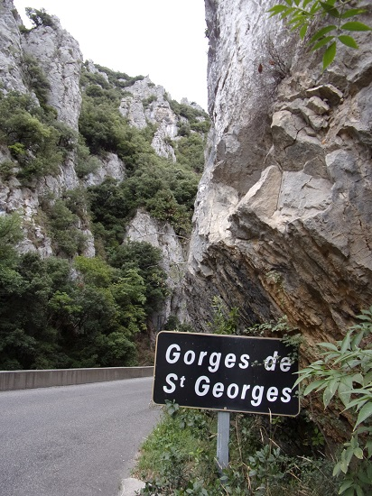
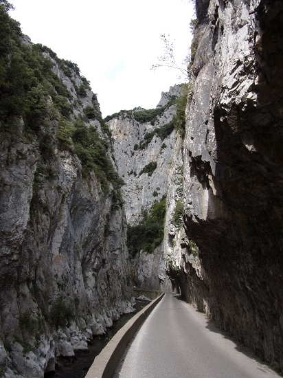
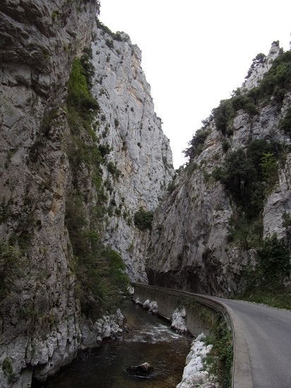
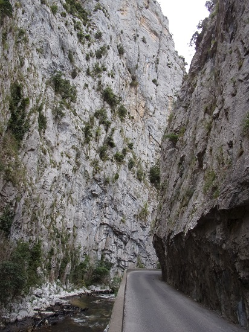
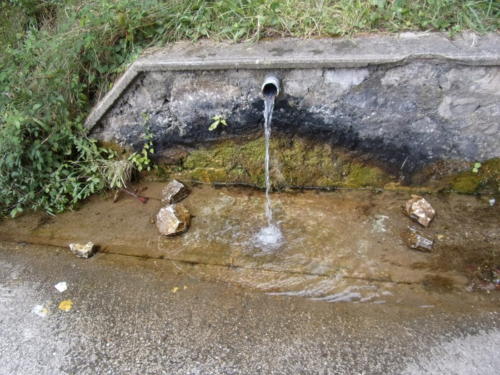
A la sortie des gorges, coté Axat se trouve la résurgence d'une source, 2 tuyaux guides l'eau (il y en a un autre qui n'apparaît pas sur la photo). Le temps que je prenne la série de cliché sur les gorges j'ai pu voir au moins 5 voitures s'arrêter pour prendre de l'eau (sans compter les piétons...). Certaines avaient la malle pleine de bidons.
La principale raison (initiale en tout cas...) de la présence de cet article sur le site consacré à Saint-Martin-Lys, est vraisemblablement que... c'est moi qui ai écrit l'article de Wikipedia sur les gorges de Saint-Georges.)
Mais aussi que beaucoup d'articles de presse mentionnant les gorges de la Pierre-Lys, présentent également les gorges de Saint Georges et donc que mes recherches systématiques sur les unes m'ont amené de la matière sur les autres, que je souhaitais partager - voir ci-dessus.
Ce fut la première entorse caractérisée à ne mettre que des sujets en rapport avec Saint Martin sur mon site (même si avec un article consacré au chef de gare de Lapradelle j'avais déjà un peu digressé). Ensuite j'ai enrichi le site en suivant l'Aude, le Rébenty et autres vallée menant à Saint Martin
Ma logique initiale était d'arriver au moins jusqu'à Gesse... puisque mon arrière grand-père était de Bessède-de-Sault.
Maintenant j'en suis à me demander quand je découperai mon site pour permettre le référencement de pages (et de digressions) devenus trop nombreuses...